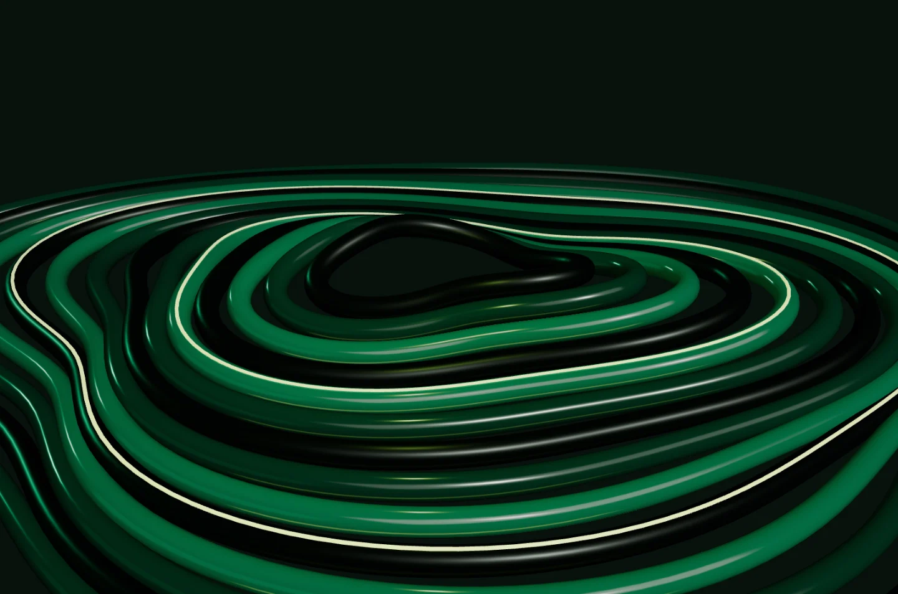
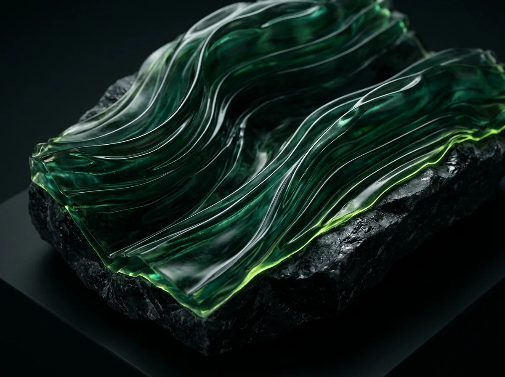
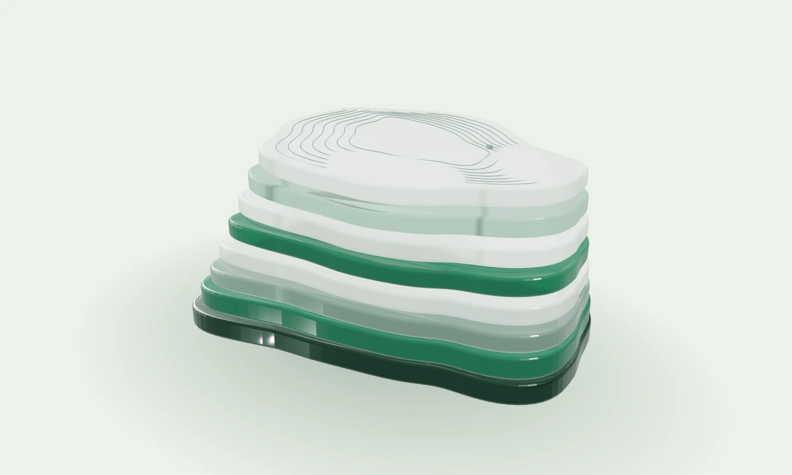

Make room for change.
Kirjane Labs is a software engineering company. We build business systems around the people who use them and the rules those people have to follow.

Look at the handoff.
When a purchase request crosses three desks, the difficulty may be knowing who can approve it, which record is current, or what happens when the usual approver is away. A better system starts by making those details explicit.
That is why we study the work before we propose software. We ask what has to stay dependable, where time gets lost, and which existing systems still earn their place. Those answers shape what we build and how we verify it.
See how we work
Adapt. Automate. Evolve.
- Adapt.
- Give each team a workflow that fits its responsibilities, approval rules, and tools.
- Automate.
- Move routine work forward and leave consequential decisions with the people accountable for them.
- Evolve.
- Build in clear boundaries so the next workflow, branch, or integration can grow from a dependable foundation.

The same thinking shapes Salryn.
Salryn is our business management kernel. It brings shared operational needs into one foundation that can be configured for different industries.